Task-1 (a): Basic Simulations - Crush Can (Crashbox) Analysis
Project
Slow speed impact on crush can
Aim
Perform study mesh convergence, understand the concept of time integration, mass scaling, and failure analysis using LSPP
Approach
Initial mesh size 6mm is taken and mesh convergence study is performed, followed by failure analysis with different thicknesses of the crashbox to propose the best model for crashbox for the given dimensions.
Units
ton, mm, sec, N, MPa, N-mm (mJ)
Vehicle mass
1.2 ton (lumped)
Initial velocity
10 kmph (2777.7 mm/s)
Results with 6mm mesh
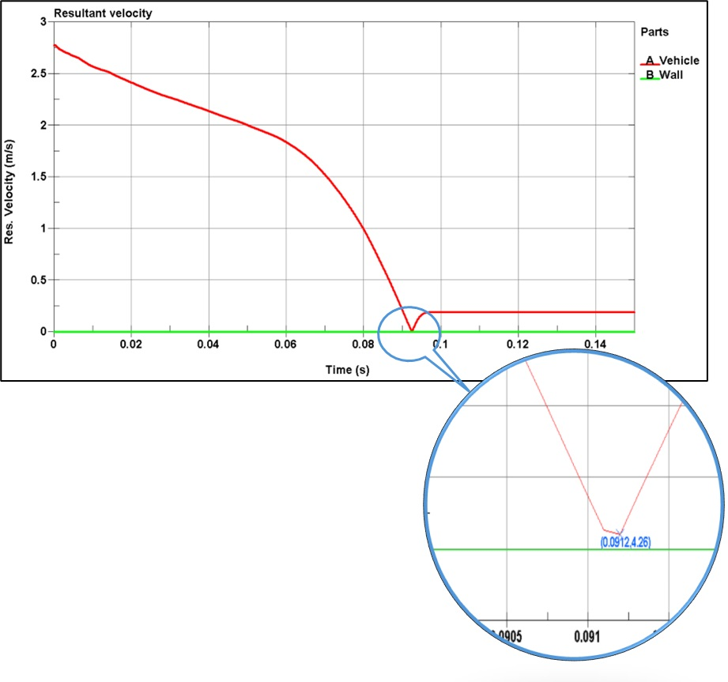
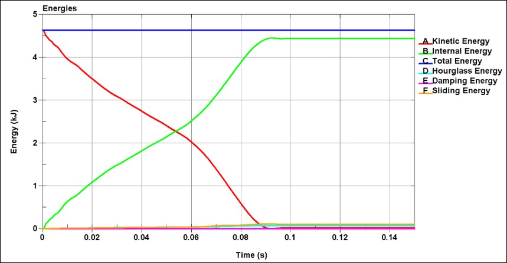
Results of mesh convergence
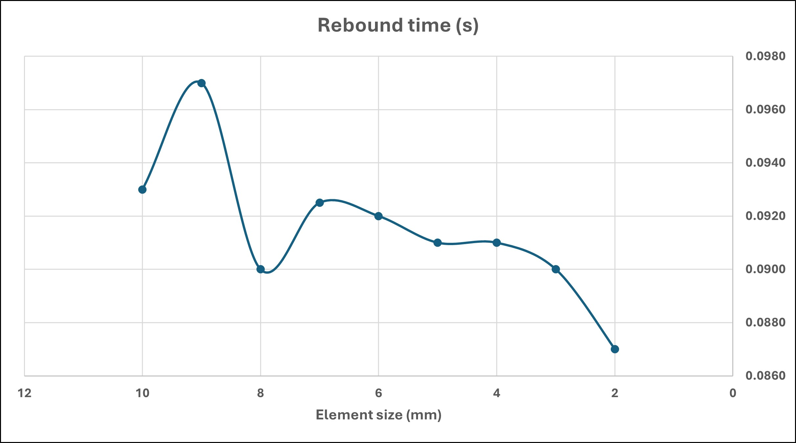
Failure analysis with different thicknesses of the crush can
Perform quasistatic analysis as per BIS14812:2005 (2005 (Automotive vehicle rear under run protective device) and find out appropriate results by using LSPP
Units
ton, mm, sec, N, MPa, N-mm (mJ)
Assumption
Weight of the truck = 1.8 ton
Loading
As per BIS 14812:2005
Applied loads
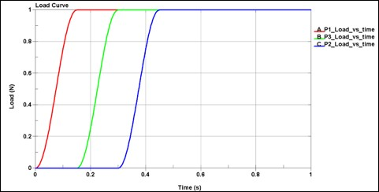
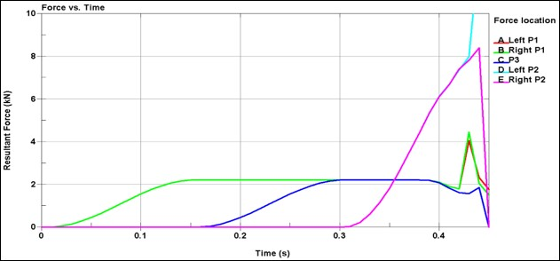
With rigid stiffeners (2mm thick) and rigid brackets (10mm)
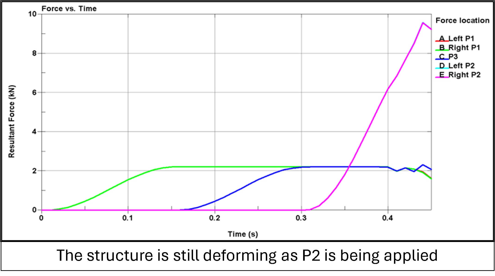
RUPD thickness = 1.2 mm (no stiffeners)
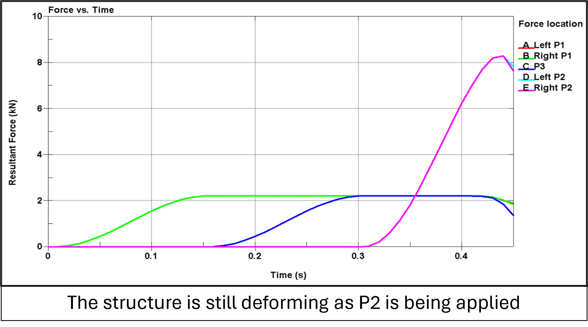
RUPD thickness = 1.3 mm (no stiffeners)
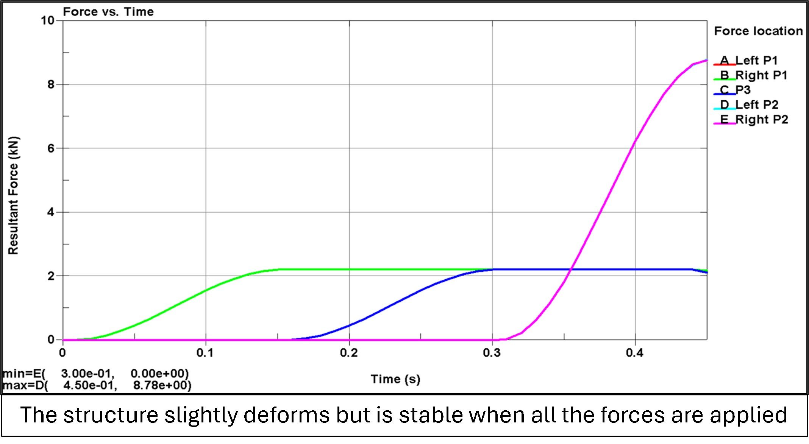
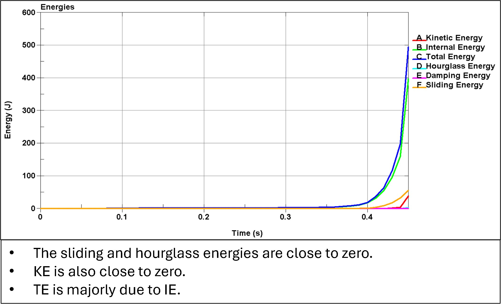
Task-2: Modal Analysis of a Seat
Aim
To find the modal frequencies of a seat
Freq = 22.0 Hz
Freq = 30.4 Hz
Freq = 36.8 Hz
Freq = 41.3 Hz
Freq = 51.6 Hz
Freq = 52.1 Hz
Task-3: Luggage retention test
Project
Explicit Analysis on seating system during the frontal impact
Aim
Perform luggage retention test as per ECE R17 and find out appropriate results by using LSPP
Units
ton, mm, sec, N, MPa, N-mm (mJ)
Results
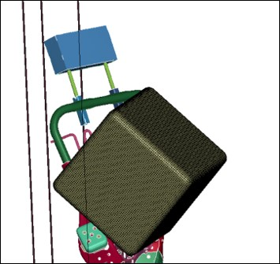
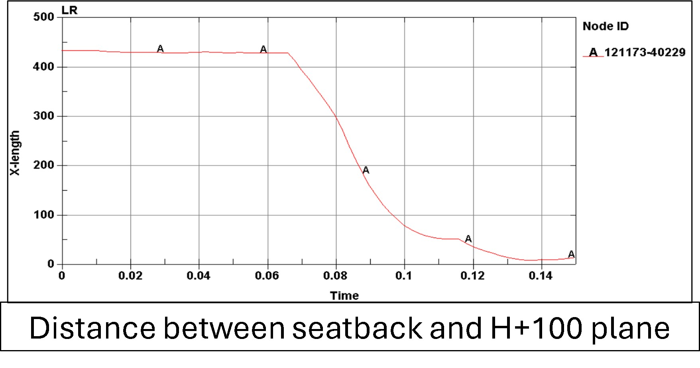
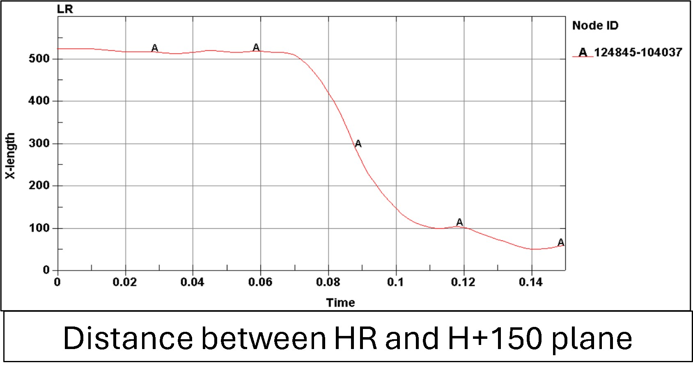
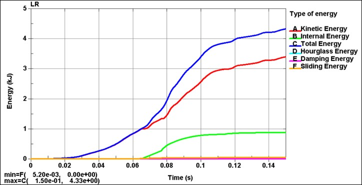
Task-4: Seat Belt Anchorage Analysis
Aim
Test seat belt anchorage as per ECE R14
Units
ton, mm, sec, N, MPa, N-mm (mJ)
Passing criteria
The seat should sustain the loads (even if the tracks peel or a bent bracket) and also the passing criteria is same as luggage retention test (w.r.t. H-, H+100- and H+150-planes)
Simulation Setup and Loads
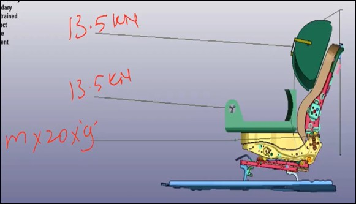
Anchorage Points
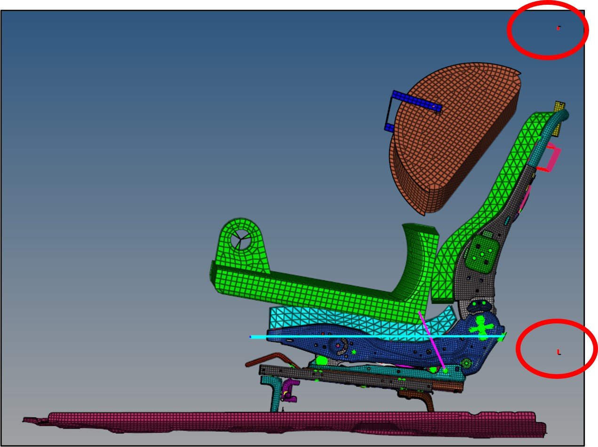
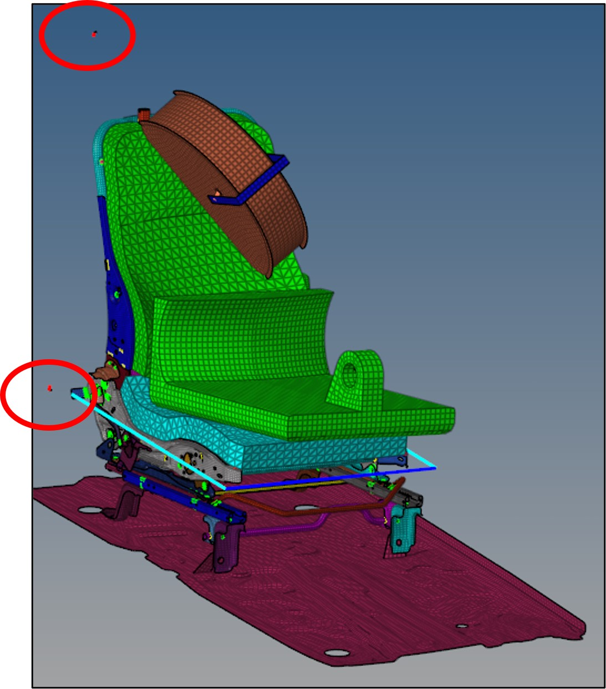
Displacements at Pretension Loads
Displacements at Full Loads
Force and Energy Analysis
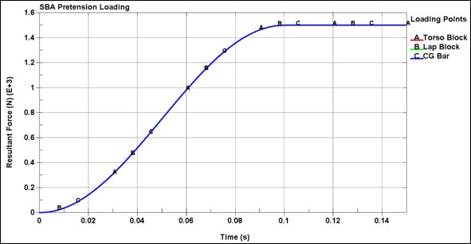
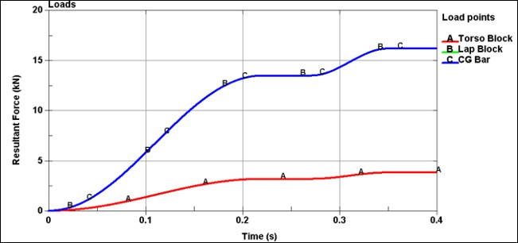
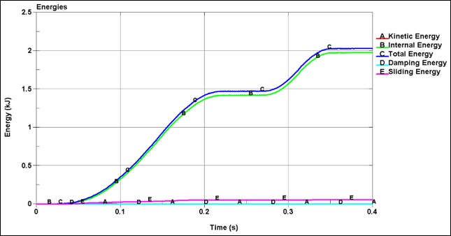
Tools
LS-DYNA
LS-PrePost
HyperMesh
HyperView
MS PowerPoint
MS Excel
About the company
Based in Pune, India, the ELENO Engineering Learning Center (ELENO-ELC) is a renowned CAE training facility that specializes in offering expert-led courses in LS-DYNA, Hypermesh, and other cutting-edge engineering technologies to mechanical engineers. With an emphasis on practical instruction, real-world projects, and career-focused mentoring, ELENO gives students the tools they need to succeed in the cutthroat CAE field. Under the direction of seasoned professionals in the field, the institution provides extensive membership plans customized to meet the objectives of each member as well as placement support at leading OEMs, Tier 1 businesses, and defense agencies. ELENO is committed to developing future engineers into professionals who are prepared for the workforce.